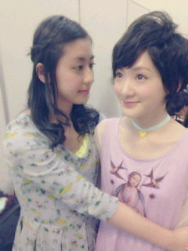
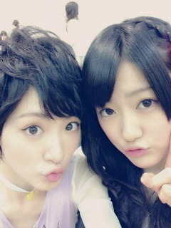
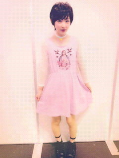

| 2013/04 23 Tue | 握手会と選抜発表〜ヽ( ・∀・)ノ |
おばんです〜ヽ(・∀・)ノ
いこまちゃんです!!
いやいや〜プリンシパルのお稽古やってるんですけども、脳みそも体力も沢山使いましてね〜
でもこのままじゃヤバイよな。
引き締めなきゃな。
と言うことで!!
まずは握手会!!
京都にて全国握手会と個別握手会がありました！
来てくださった皆さんありがとうございました

全握で一緒のレーンだったちはると!!

いつも変なこと一緒にやってるんだ〜ヽ(・∀・)ノ
そして同じホテルの部屋だったひなちまと!!

何度寝ているひなちまにちょっかいだそうとしたか...
ちょっかい出したら、ひなちまにいやーって言われそうだったから寝顔をガン見しました

そしてミニライヴにて選抜発表がありましたね!!
皆さん結果知ってるよね！
初めてセンター以外のポジションをやらせて頂くことになりました！
乃木どこの選抜発表で泣いたのは、どっちかっていうと解放感でした。
全握のステージで立ちくらみしたのも、ホッとしたからです。
正直今まで苦しくて、自分のことを攻め続けて来ました。
だから、それが一気に取れたから、体がびっくりしちゃったんだと思います。
今は凄くスッキリしています。
今まで以上にやる気満々です!!
センターじゃなくても、私は輝けるって証明したい。
いろんな事を吸収して、必ず力にする。
あぁ、凄くやる気満々

いろんな事に負けたくない！
認めてもらえなかったから認めてもらえるように頑張りたい。
いつか、また。
そのときが来たら。
私は今度こそ自信に満ち溢れていたい。
だから皆さん。
ちゃんと見ててくださいね。
そして、ポジションが後ろだから、前だからは関係ないと私は思います。
乃木坂メンバーひとりひとりが魅力的で凄くかわいい。
みんなオンリーワン。
だからその子を見てね。
その子以上の人なんてこの世には誰ひとりいないんだから。

個別の時のお洋服！
いこまちゃん今回からかわいくなるを目標に生きていきます!!
ただっ!!
時々ボーイシュに戻らせてくれっ!!
みなさん。
乃木坂を愛してくださいね
その分。
魅力的な乃木坂になるから
なってみせる。
じゃあね〜
へばなっ!!
コメント(1343)
2013/04/23 22:42